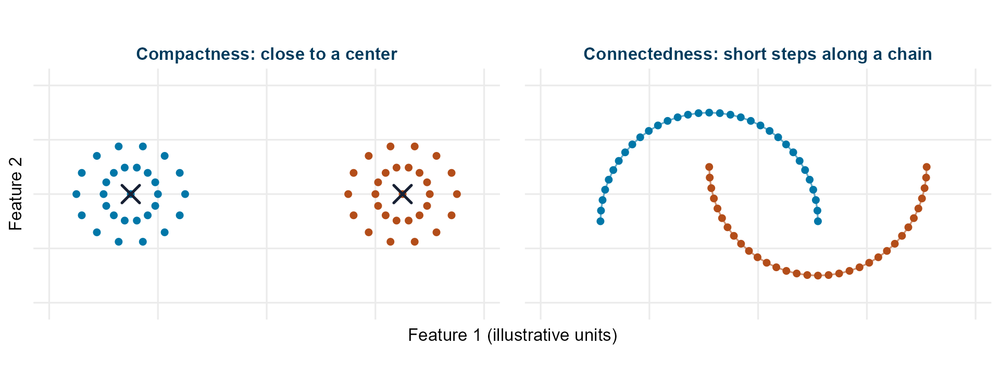
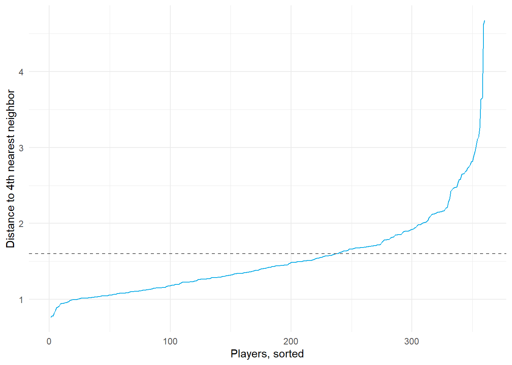
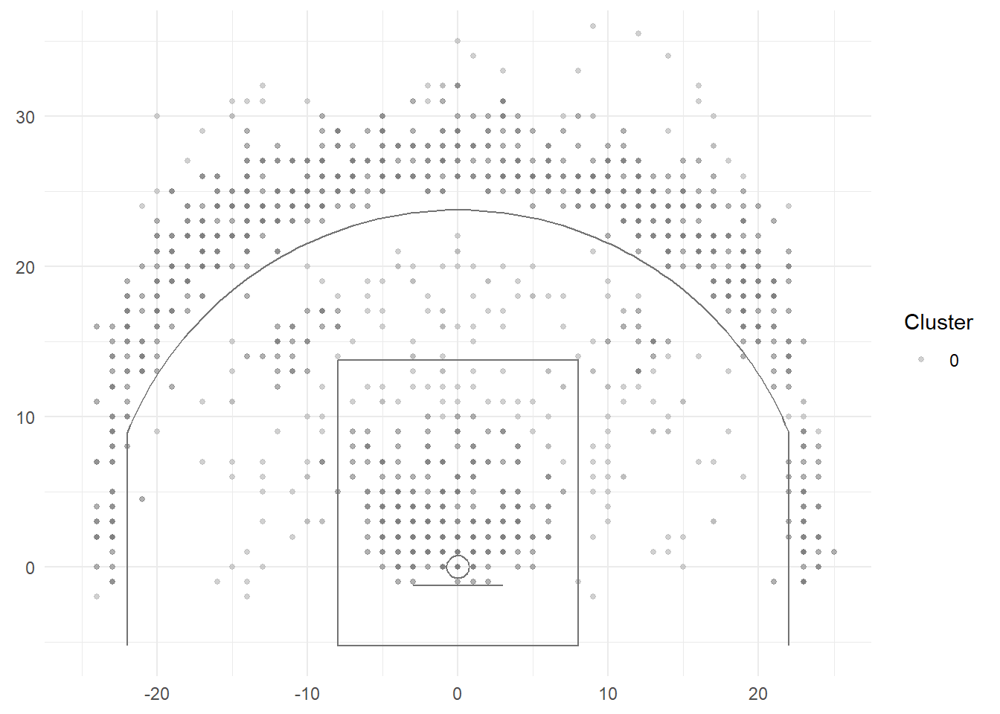
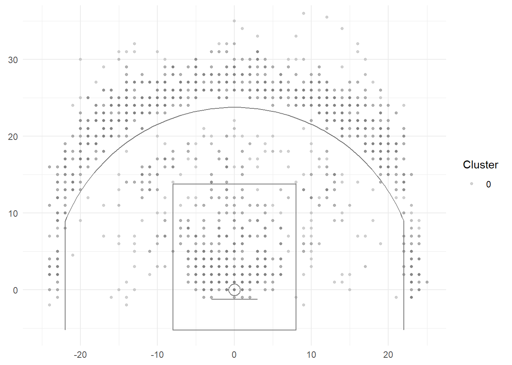
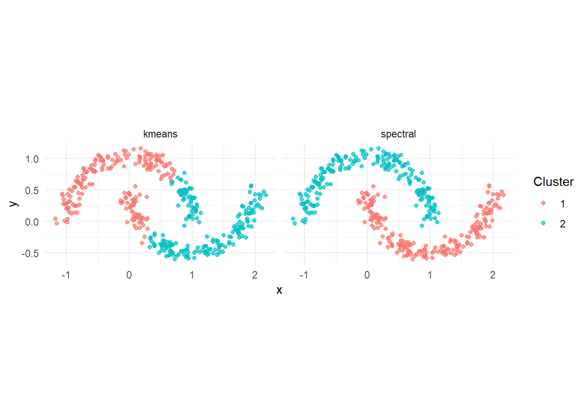

6.5 Beyond the Classics: Density, Graphs, and Matrix Factorization
Author
Hua Gong
Note
Density-based Clustering is required readings. Other sections are not.
1 Learning objectives
After this tutorial, you should be able to:
define core, border, and noise points and run DBSCAN with parameters chosen from a k-distance plot;
explain how HDBSCAN extracts clusters of varying density from a hierarchy;
build a similarity graph, form its Laplacian, and derive spectral clustering from the eigenvectors;
cluster mixed numeric and categorical data with Gower distance and k-medoids;
factorize a matrix of shot charts with non-negative matrix factorization and interpret the bases and loadings; and
match each method to the structure it is designed to find.
2 What the classics cannot do
2.1 Compactness versus connectedness
Before choosing a clustering method, decide what it should mean for points to belong together.
Compactness: members sit close to a common center. Think of players whose standardized statistics all resemble one typical profile.
Connectedness: members can reach one another through a chain of short steps between nearby observations. The ends of the chain can be far apart, so a curved group may have no useful central representative.

Figure 1: Compact groups gather around centers, while connected groups can follow curved chains of nearby points.
In the left panel, a center summarizes each group well. In the right panel, following neighbors preserves each crescent even though its endpoints are far apart. These are two useful notions of a cluster, rather than guarantees about what any algorithm will recover. The distance and neighborhood settings determine which points count as neighbors.
k-means favors compact groups around centroids. Ward linkage favors merges with small increases in squared error. Gaussian components can be elongated, but each component remains an elliptical density and an ordinary mixture assigns all observations membership probabilities. Density and graph methods offer additional ways to represent connected regions and unusual observations.
3 Density-based clustering
Density-based methods combine connectedness with a crowding requirement: a cluster needs a chain of sufficiently dense neighborhoods. For shot locations, imagine sliding a small circle around the court and asking whether enough shots fall inside it.
3.1 DBSCAN
DBSCAN (Ester et al., 1996) defines clusters as connected regions of high density. With a radius and a minimum count :
a core point has at least points (including itself) within distance ;
a border point is within of a core point but is not itself a core point;
a noise point is neither.
Two core points within of each other are connected, and a cluster is a maximal set of connected core points together with their border points. Noise points belong to no cluster. The algorithm has no ; the number of clusters is whatever the density produces.
3.2 How DBSCAN grows a cluster
Suppose we use eps = 2.2 feet and minPts = 5 on shot locations. A shot with four other shots within 2.2 feet is a core point because it counts itself as the fifth. A nearby shot with only two other neighbors is a border point if its circle reaches a core point. An isolated shot that reaches no core point is noise.
Start at an unvisited core point and give it a new cluster label.
Add its neighbors. Whenever a newly reached neighbor is also core, explore that point’s neighborhood too.
Stop when no more core neighborhoods can extend the cluster, then start again at another unvisited core point.
Only core points extend a cluster. A chain consisting only of border points cannot bridge two dense groups. A border point touching two clusters can receive an order-dependent assignment. The final noise points remain unassigned, which R records as cluster 0.
3.3 Choosing the parameters
The two settings answer different questions:
Setting
Meaning
What changing it tends to do
eps ()
How far does a neighborhood reach?
A larger radius connects more points and can merge groups; a smaller radius can split groups and leave more noise.
minPts ()
How many points make a neighborhood dense?
A larger count makes core status harder to earn and can leave more noise.
Distances use the supplied feature units. Standardize player statistics before computing distances; court coordinates already share a unit, feet. An epsilon suitable for shot coordinates has no direct meaning for principal-component scores.
Because dbscan::dbscan() counts the point itself in minPts = m, plot distances to the -th other nearest neighbor. Start with a dimension-aware value of minPts, then examine sensitivity to both parameters. Points inside dense regions have small values; the curve bends upward where noise begins, and the bend is a natural .
pcs <-prcomp(X)$x[, 1:5]knn_distances <-sort(kNNdist(pcs, k =4))ggplot(data.frame(rank =seq_along(knn_distances), distance = knn_distances), aes(rank, distance)) +geom_line(color ="#03a9e6") +geom_hline(yintercept =1.6, linetype ="dashed", color ="gray40") +labs(x ="Players, sorted", y ="Distance to 4th nearest neighbor") +theme_minimal()

Sorted distance to the fourth-nearest neighbor for every player profile. The knee marks a candidate epsilon.
The dashed line at 1.6 is the candidate used below, not an automatically estimated cutoff. A knee can be ambiguous or absent. Try nearby radii and counts, then compare the number of clusters, the fraction labeled noise, and whether the groups remain interpretable. Here five PCs with minPts = 5 illustrate the mechanics; higher-dimensional data often need a larger count, so this setting is not a default recommendation.
3.4 Players without comparables
Applied to the player profiles in the space of the first five principal components, DBSCAN mostly returns one large cluster: the continuum of Tutorial 6.1 has no gaps for the algorithm to find. What it adds is the noise label, which identifies players who are not close to anyone.
db <-dbscan(pcs, eps =1.6, minPts =5)table(cluster = db$cluster)
These players have too few nearby profiles to join a dense region under the selected features and tuning parameters. A noise label does not establish that no useful comparable exists. Changing the distance, feature set, or density threshold can change this label.
3.5 Shot locations for one player
Density has a more natural role for shot locations, where the clusters are spatial regions.
player_shots %>%mutate(cluster =factor(db_shots$cluster)) %>%ggplot(aes(court_x, court_y, color = cluster)) +geom_point(alpha =0.6, size =1) +scale_color_manual(values =c("0"="gray70", scales::hue_pal()(max(db_shots$cluster)))) +court_layers() +labs(x =NULL, y =NULL, color ="Cluster") +theme_minimal()

DBSCAN on one player’s shot locations. Gray points are noise; colored points are density clusters.
DBSCAN finds the regions where this player shoots often and labels the rest as scattered attempts, without any assumption that the regions are round. Its weakness is visible too: one must serve every region, so a dense rim cluster and a diffuse arc cluster cannot both be resolved well.
3.6 HDBSCAN
HDBSCAN (Campello, Moulavi, and Sander, 2013) explores many density thresholds instead of choosing one global . Imagine gradually shrinking DBSCAN’s neighborhood radius: broad regions break into smaller, denser groups. HDBSCAN tracks which groups survive across density levels.
Its main steps are:
Estimate a core distance for each point: how far it must reach to collect enough neighbors. A sparse area needs a larger distance.
Compare points using mutual reachability distance, the largest of their ordinary distance and their two core distances. This makes a connection through a sparse area more costly.
Build a minimum spanning tree, a set of links that connects all points with the smallest total link weight and no loops. Removing links from largest to smallest creates a hierarchy of groups.
Select groups with high stability, which combines their membership and persistence across density levels, rather than taking one horizontal cut through the whole hierarchy.
This allows dense and more diffuse clusters to coexist, although overlapping groups or weak density separation can still be difficult. In dbscan::hdbscan(), minPts controls smoothing and minimum cluster size. With its self-counting convention, the core distance uses the -th other nearest neighbor. Other implementations can expose smoothing and minimum size as separate settings.
player_shots %>%mutate(cluster =factor(hdb$cluster)) %>%ggplot(aes(court_x, court_y, color = cluster)) +geom_point(alpha =0.6, size =1) +scale_color_manual(values =c("0"="gray70", scales::hue_pal()(max(hdb$cluster)))) +court_layers() +labs(x =NULL, y =NULL, color ="Cluster") +theme_minimal()

HDBSCAN on the same shots, with clusters selected by stability across density levels.
The R implementation returns membership_prob, a density-based membership strength. Despite its name, this score is not a Bayesian posterior probability or a Gaussian-mixture responsibility, and it does not sum over alternative clusters in the same way.
4 Spectral clustering
Spectral clustering represents the data as a graph: each observation is a node, and a link joins observations that are neighbors. A strong link means high similarity. The goal is to divide this network into groups with strong connections inside each group and relatively weak connections between groups.
Think of shots arranged along two separate curved bands. Shots at opposite ends of one band may be far apart, but a chain of nearby shots connects them. A graph can preserve that chain, whereas k-means in the original coordinates favors points near the same center. Spectral clustering still uses distances to build its graph; it changes how those local distances become a grouping.
Unlike DBSCAN, the version here requires a chosen number of clusters and assigns every observation to a group. It has no automatic noise label.
4.1 Reading the graph matrices
Object
Plain-language role
Similarity table: is the strength of the link from point to point ; zero means no link. We set .
Diagonal table of total connection strength: . A well-connected point has a larger degree.
Graph Laplacian: summarizes how a value at each point differs from the values at its neighbors.
Normalized Laplacian: adjusts for differences in total connection strength between points.
4.2 Similarity graph and Laplacian
Build a weighted graph with vertices at the observations and edges between neighbors,
with local scales equal to the distance to the -th other nearest neighbor. Here is the graph neighborhood size (the helper’s neighbors argument), separate from DBSCAN’s minPts. Close pairs receive larger weights; distant pairs receive smaller weights. Let be the diagonal matrix of degrees . The graph Laplacian and its symmetric normalization are
For any vector ,
where is a number attached to node . If two strongly linked nodes get very different values, the squared difference produces a large penalty. For example, a link of weight 1 with values 0 and 1 contributes 1 to the energy after the two symmetric terms combine; a link of weight 0.1 contributes only 0.1. It is therefore cheaper to put a boundary across weak links.
An eigenvector supplies one value per node, so we can use it as a new coordinate for each observation. Eigenvectors with small eigenvalues capture gradual variation across strongly linked parts of the graph. For the normalized Laplacian, this smoothness applies to values adjusted by the square root of degree. Using several such coordinates gives a graph embedding, a new representation in which groups linked by chains can become easier to separate.
Mathematically, this approximates a normalized cut: it seeks weak links between groups while accounting for each group’s total connection strength, so that isolating a tiny group is less attractive than under an unnormalized cut. With positive degrees, the number of eigenvalues exactly zero equals the number of disconnected components. Several small eigenvalues followed by a large eigengap can suggest a cluster count, but near-zero values alone do not prove there are separate components.
4.3 The algorithm
Choose and a neighborhood size, then form , , and . Check for isolated nodes before dividing by degrees.
Take the eigenvectors with the smallest eigenvalues as the columns of . Each row now describes one observation using graph coordinates.
Normalize each nonzero row to length one, so clustering compares the direction of these graph coordinates.
Run k-means on the rows of to obtain the final labels.
For 400 observations and , is a table, while has 400 rows and just two columns. The last step clusters these two new coordinates. It does not rerun k-means on the original coordinates.
The graph is a modeling choice. Too few neighbors can fragment one group; too many can connect two groups that should stay separate. Standardization, the similarity scale, and also affect the result. Compare nearby settings rather than treating the graph as fixed truth.
4.4 Why k-means can split curved groups
set.seed(431)make_moons <-function(n, noise =0.08) { t <-runif(n, 0, pi) upper <-data.frame(x =cos(t), y =sin(t), truth =1) lower <-data.frame(x =1-cos(t), y =0.5-sin(t), truth =2) moons <-rbind(upper, lower) moons$x <- moons$x +rnorm(2* n, 0, noise) moons$y <- moons$y +rnorm(2* n, 0, noise) moons}moons <-make_moons(200)M <-as.matrix(moons[, c("x", "y")])moons$kmeans <-kmeans(M, 2, nstart =20)$clustermoons$spectral <-spectral_clustering(M, k =2, neighbors =10)$clusterdata.frame(method =c("k-means", "spectral"),adjusted_rand_index =c(adjusted_rand_index(moons$truth, moons$kmeans), adjusted_rand_index(moons$truth, moons$spectral))) %>% knitr::kable(digits =2)
method
adjusted_rand_index
k-means
0.22
spectral
1.00
moons %>% tidyr::pivot_longer(c(kmeans, spectral), names_to ="method", values_to ="cluster") %>%ggplot(aes(x, y, color =factor(cluster))) +geom_point(alpha =0.7) +facet_wrap(~method) +coord_equal() +labs(color ="Cluster") +theme_minimal()

Two interleaved half-moons. k-means splits them with a straight line; spectral clustering follows the shapes.
There is no clear eigengap, which is the spectral way of saying what every earlier tutorial said: player profiles form a continuum. Spectral clustering still partitions it, but by connectivity rather than by distance to a center, so its clusters can be elongated along the continuum. The kernlab::specc() function implements the same idea with a global kernel bandwidth.
5 Mixed data: Gower distance and k-medoids
Real scouting data mix numbers with categories: position, handedness, contract type, college conference. Gower’s coefficient handles them by averaging per-variable dissimilarities, each scaled to :
where is 1 when both values are observed. The result is a dissimilarity, so k-medoids and hierarchical clustering apply directly; k-means and Gaussian mixtures do not.
mixed <- profiles %>%select(all_of(profile_features), position_group) %>%mutate(position_group =factor(position_group))gower <-daisy(mixed, metric ="gower")pam_gower <-pam(gower, k =6)table(cluster = pam_gower$clustering, position = profiles$position_group) %>% knitr::kable()
Center
Forward
Guard
3
42
1
39
1
0
0
0
58
0
0
103
5
83
0
3
22
0
The position label was included here only to demonstrate the mechanics; including it makes the clusters align with positions partly by construction. A categorical variable with three levels contributes a 0/1 mismatch that can outweigh small numeric differences, so weights matter even more with mixed data than with numeric data alone.
6 Non-negative matrix factorization for shot charts
A player’s shot chart is a vector of counts over court cells. Stack the charts of players into a matrix with one row per player and one column per cell. Non-negative matrix factorization (NMF) seeks
by minimizing . The rows of are basis charts, each a non-negative pattern over the court, and row of says how much of each basis player uses. Because nothing can be negative, the bases are additive parts, which for shot charts turn out to be shot types: rim, corner threes, above-the-break threes, and so on. This is the approach of Miller, Bornn, Adams, and Goldsberry (2014), who used it to define shooting styles.
NMF differs from PCA in two ways. Its components are non-negative and therefore interpretable as charts, whereas principal components have negative entries. And it is a soft description: a player is a mixture of bases, not a member of a cluster.
6.1 Multiplicative updates
Lee and Seung (2001) showed that the updates
with and the fraction taken elementwise, never increase the loss and keep every entry non-negative. They are a form of gradient descent with a step size chosen to preserve the sign.
Kyle Anderson, Bam Adebayo, Deandre Ayton, Kris Dunn
Basis 2
Ayo Dosunmu, Moritz Wagner, Deni Avdija, Bryce McGowens
Basis 3
Luke Kornet, Trayce Jackson-Davis, Isaiah Hartenstein, Marvin Bagley III
Basis 4
Luka Doncic, Luke Kennard, Anfernee Simons, Fred VanVleet
Basis 5
Caleb Houstan, Dean Wade, Malik Beasley, Nicolas Batum
Basis 6
Andre Drummond, Jakob Poeltl, Isaiah Hartenstein, Dereck Lively II
The heaviest users of each basis name it: the rim basis is led by centers, the corner-three basis by spot-up wings, the above-the-break basis by high-volume perimeter creators.
The loadings describe each player’s shot selection as a recipe. Clustering the rows of with k-means turns the recipes into shooting styles, and the choice of rank plays the role of ; a reconstruction-error curve or held-out reconstruction error across ranks guides it.
7 Choosing a method
The shot-grid NMF here uses normalized observed cell counts without a spatial intensity model. Miller, Bornn, Adams, and Goldsberry (2014) combine spatial intensity modeling with factorization. Our example factorizes normalized observed cell counts directly, so it does not reproduce their complete estimation procedure.
Structure or need
Method
compact, similar-size clusters; large
k-means
any dissimilarity; representative members
k-medoids
nested resolutions; a picture
hierarchical
elongated clusters; soft membership; model selection
Gaussian mixture
arbitrary shapes; outliers; unknown
DBSCAN, HDBSCAN
connected but not compact clusters
spectral
mixed numeric and categorical variables
Gower distance with k-medoids or hierarchical
additive parts of non-negative data
NMF
8 Practice
With fixed, what happens to the number of noise points as increases?
Why does spectral clustering succeed on the half-moons where k-means fails?
Explain in one sentence why a k-means on NMF loadings and a k-means on raw shot charts can give different clusters.
Give one reason to prefer NMF over a Gaussian mixture for shot charts.
TipShow answers
It increases: more points fail to have neighbors within , so fewer points are core points and more are left unassigned.
The moons are connected through chains of nearby points but are not compact around a center, so the graph embedding separates them while Euclidean distance to a centroid does not.
The loadings represent each chart in a low-dimensional space of shot types, which changes the representation and can reduce cell-level noise, whereas raw charts are dominated by the high-count rim cells.
NMF returns interpretable non-negative basis charts and describes each player as a mixture, whereas a mixture over shot coordinates describes zones for individual shots rather than styles for players.
9 Key takeaways
DBSCAN and HDBSCAN find clusters of arbitrary shape and label outliers; on player profiles, noise labels depend on the chosen features and density thresholds.
Spectral clustering partitions a similarity graph through the eigenvectors of its Laplacian and finds connected rather than compact clusters.
Gower distance makes mixed data clusterable with k-medoids or hierarchical methods; weights matter.
NMF decomposes shot charts into additive basis charts and per-player loadings, a soft and interpretable description of style.